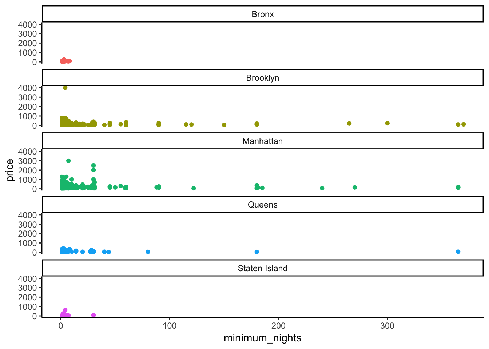

filter, arrange, and R project (Rproj) files
Functions for Lesson 3
p_load, ==, |, %in%, filter, near
Packages for Lesson 3
ggplot2,pacman, dplyr, nycflights13
Data visualisation in R for Data Science, Section 4.
pacman for easy package loadingR operatorsdplyr::filter()Recreate the below plot using the smaller NYC Airbnb dataset.
# smaller csv file (16 cols)
url <- "http://data.insideairbnb.com/united-states/ny/new-york-city/2019-06-02/visualisations/listings.csv"
nyc <- read_csv(url)
nyc <- nyc[nyc$id < 1e+06, ] # get smaller subet of data
pacmaninstall.packages("pacman")
require(pacman)Type in the packages you want to install into the p_load function.
Note: the below two arguments are the same
p_load(dplyr, ggplot2, nycflights13) # your packages pacman::p_load(dplyr, ggplot2, nycflights13) # this is the same as above, but allows you to use a specific function from a package without loading the entire package: 'package::function(argument1,argument2,argument3)'
R project (Rproj) files.You can set individual working directories and contain your R documents related to a specific project using an Rproj file. Two options:
Option 1: Create an RProject new directory: 1. File > New Project 1. Create New Project
1. Choose a name for your RProj folder. Fill out Directory name: (make it machine-friendly, i.e. no spaces). 1. Choose a place for the RProj to live. Browse 1. Select Open in new session
Option 2: If you already have a folder just for Emory Coding Club: 1. File > New Project 2. Existing directory > Browse
3. Select Open in new session
Open a new R file within this project and save it as ‘Lesson3.R’.
Now repeat the above steps so that you have two different Rproj files. Name this second project something different.
Let’s now see why Rproj files are a useful workflow method by checking the working directory for each project.
getwd()
RLearning and applying the fundamentals of R so you can build more complex analytical tools. Use the below summary sheet of some common, basic R operations to solve the practice questions in the following section.
R fundamentals# numeric calculations
1/200 * 30
# > [1] 0.15
(59 + 73 + 2)/3
# > [1] 44.7
sin(pi/2)
# > [1] 1
# -------------------------------------------
# assigning objects
require(tidyverse)
x <- 4 * 3 # conventional method
x # occasional tidyverse method to be aware of
<- 3 * 4
x # used with a pipe ( %>% )
<- x %>% sqrt
# -------------------------------------------
# missing values (NAs)
NA > 5
10 == NA
NA + 10
NA/2
NA == NA # get NA
x <- NA
y <- NA
x == y # x and y are both unknowns, so the above returns NA
# check if NAs exist
is.na(x)
# -------------------------------------------
# conditionals
5 != 5 # is not equal to
5 < 10
5 > 10
5 >= 10
5 <= 10
Load the datasets
library(nycflights13)
flights # print the flights dataset
int stands for integers.
dbl stands for doubles, or real numbers.
chr stands for character vectors, or strings.
dttm stands for date-times (a date + a time).
lgl stands for logical, vectors that contain only TRUE or FALSE.
fctr stands for factors, which R uses to represent categorical variables with fixed possible values.
date stands for dates.
dplyrfilter()Pick observations by their values
jan1 <- filter(flights, month == 1, day == 1)
(jan1 <- filter(flights, month == 1, day == 1)) # wrap in parentheses to both assign and execute
filter(flights, month = 1)
The following code finds all flights that departed in November or December.
glimpse(flights)
# using `|`
filter(flights, month == 11 | month == 12)
# using `%in%`
nov_dec <- filter(flights, month %in% c(11, 12))
# a '!' specifies a range WITHOUT those conditions, i.e. equal to not including those values
filter(flights, !(arr_delay > 120 | dep_delay > 120))
filter(flights, arr_delay <= 120, dep_delay <= 120)
Retaining NA values
df <- tibble(x = c(1, NA, 3)) # create tibble dataframe
filter(df, x > 1) # omit NA by default
filter(df, is.na(x) | x > 1) # retain NA
arrange()Change rows to ascending order
arrange(flights, year, month, day)
desc() = descending order
arrange(flights, desc(dep_time))
This puts missing values at the end of the dataframe
df <- tibble(x = c(5, 2, NA)) # create mock data
arrange(df, x)
arrange(df, desc(x))
Use the new examples on the Airbnb dataset.
# large Airbnb dataset (106 cols)
url <- "http://data.insideairbnb.com/united-states/ny/new-york-city/2019-06-02/data/listings.csv.gz"
nyc_full <- read_csv(url) # reads in data
nyc_full %>% glimpse